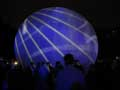
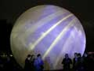
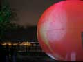
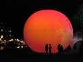
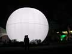
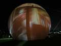

Х ВАМ
В Петербурге принято решение о возведении 300-метрового «террористотвода», призванного магическим образом отвлечь злоумышленников от исторического центра города. Громадное сооружение, даже ночью манящее своими ярмарочными переливами, в основании имеет форму звезды, повторяющей силуэт шведской крепости Ниеншанц, располагавшейся на этом месте. Цитадель, снесенная Петром I, стала призрачным «местом силы», альтернативным по отношению к Петропавловке. «СусанинЪ» выдвигал на конкурс свой проект башни — увеличенную копию не осуществленной колокольни Смольного собора Растрелли (см. илл.), но он, к сожалению, проиграл английскому проекту «Х ВАМ» («ИКС БАМ»). На решение жюри во главе с В.И.Матвиенко повлияла фаллическая форма архитектурного шедевра, соответствующая «памяти громаздья комсомольских строек» и «истинно русскому символизму, соответствующему функции конструкции». Экспериментом заинтересовались центры цивилизованного мира.
Нимрод Фаллологоцентристов
Надувной музей современного искусства
Организаторы:
Бюро тенденций
Корпорация Счастье
«Клуб Речников»
при поддержке
Комитета по культуре и туризму администрации Санкт-Петербурга.
Надувной музей современного искусства – это инновационная архитектурная конструкция, разработанная в мастерских арт-группы «Речники» под руководством А. Богданова, она транспортабельна, легко монтируема и удобна. У этой конструкции есть 2 формы: шар и полусфера.
Используя эту конструкцию для экспонирования произведений современных российских художников, чьи работы хранятся в Государственном Русском музее, Третьяковской галерее и продаются на аукционе Sotheby’s, мы можем открыть в Петербурге на одну ночь музей современного искусства. Художественные произведения будут любезно предоставлены из частной коллекции музея Новой Академии Изящных Искусств им. Т.П.Новикова.
В городе-музее Петербурге нет городского музея современного искусства, но это не значит, что в Петербурге нет коллекций современного искусства. Работы художников, чьи имена вписаны в историю прошедшего века, хранятся в отделе Новейших течений Государственного Русского музея, и в некоторых частных коллекциях и галереях. Было бы несправедливо обойти вниманием эти собрания во время проведения ежегодного фестиваля «Ночь музеев». Отсутствие здания не помеха. Современное искусство должно выставляться в современных выставочных пространствах.
Территория объекта обнесена ограждениями и имеет вход, выполненный в виде античного портика. На портике установлены видеопроекторы и световое оборудование – 9 лазеров - газовые аргоновые (зелено синие), аргон-криптоновые и YAG лазеры. На поверхность шара и полусферы проецируются реклама спонсоров мероприятия, видео-документальная хроника выставок художников неоакадемистов, проходивших во дворцах и лучших выставочных залах Европы.
Шар и полусфера освещены снаружи и изнутри концертными световыми приборами.
Пространство объекта озвучено классической музыкой. Миниатюрные динамики расположены внутри по периметру шара и полусферы, создают эффект наполненности звуком.
Шар и Полусфера – воздухоопорные конструкция, диаметром 10м., оснащенные входом и выходом высотой 1.5 метра. Сшиты из парашютного шелка, обладают светопропускными и водонепроницаемыми свойствами. Устанавливаются на любой ровной поверхности, надуваются батутным вентилятором. В конструкцию входят колышки и грузики, выдерживают порывы ветра 5м/с.
Площадь плоской поверхности: внутри шара 10 кв.м., внутри сферы 70 кв.м.
Пространство внутри Шара и Полусферы обладает повышенными акустическими характеристикам: за счет отражающегося экрана звук повторяется многочисленным глухим эхом. В связи с округлыми формами пространства, человек, попадая в Шар или Полусферу, испытывают ощущение подъема жизненного тонуса.
При инсталляции любого объекта в пространстве Шара и Полусферы, его восприятие очищается от контекста внешней среды, таким образом, объект предстает в его самостоятельной ценности.
|  |
 |
 |
|  |
 |
 |
Клуб Речников, Санкт-Петербург 2007 г.
Санкт-Петербург
июнь 2007 г.
Ceremonia.ru
Торжественное совершение церемоний.
Совершение обрядов церемоний по установленному порядку и правилам.